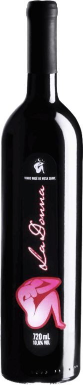

La Donna
Vinho
Rosado
de Mesa
um vinho leve, suave, rosado, aprovado por 90% das mulheres que o degustaram.

um vinho leve, suave, rosado, aprovado por 90% das mulheres que o degustaram.
caracterizam-se pela coloração amarelo-palha, translúcido com aroma floral e frutado característico, de paladar macio e agradável com corpo harmonioso.
caracterizam-se pela cor vermelho-rubi intenso, aroma marcante, sabor frutado, de corpo médio e paladar harmonioso.
caracterizam-se pela cor vermelho rubi-intenso, aroma marcante, sabor frutado delicado e paladar equilibrado.
é ideal para festas, confraternizações, reuniões com os amigos, eventos e para aquela macarronada de domingo na casa da nona.

um vinho sem álcool para quem busca o equilíbrio entre o vinho suave e o seco.
possui alta concentração de flavonóides, substâncias benéficas ao organismo.
a elaboração começa pelo processo normal de fermentação, envelhecimento e desalcoolização, mantendo assim todas suas propriedades benéficas, como os flavonóides, substâncias benéficas ao organismo.
apresenta seu tanino característico, corpo médio e equlibrado, álcool bem integrado e um retrogosto amadeirado.
possui uma bela cor rubi intensa com notas aromáticas frutadas, com toques de geléia e amora.
produzido de acordo com os preceitos canônicos da Igreja Católica para a produção e utilização do vinho nas celebrações eucarísticas
Autorizado pelo Bispo Diocesano (agora Emérito) Dom Fernando José Penteado, a La Dorni se orgulha de ser uma das poucas vinícolas a possuir a honra de produzir vinhos para celebração da eucarístia